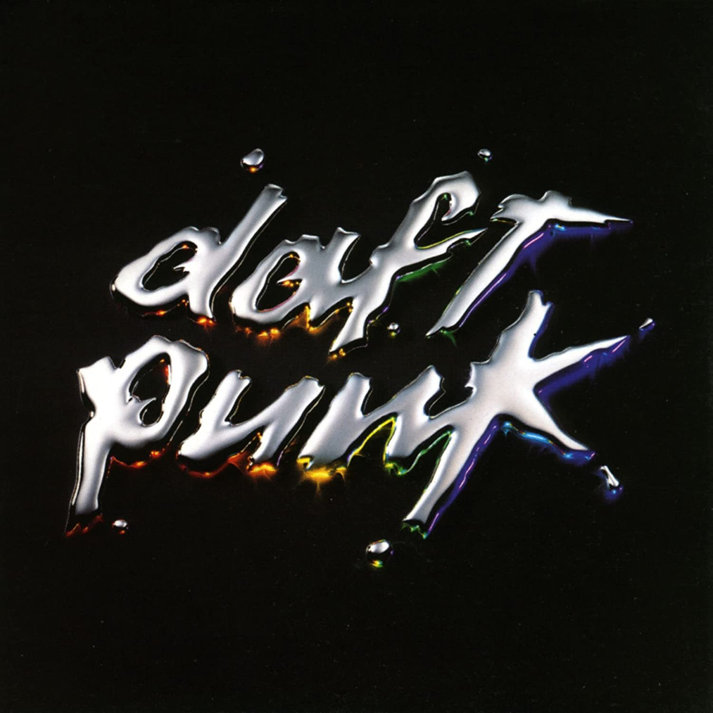

Discography

Homework (1993)
Daft Punk's first studio album, Homework, was released in 1993. One hit song from the album was "Around the World".

Discovery (2001)
Daft Punk's next studio album, Discovery, was released in 2001. This album featured one of their most well-known songs, "One More Time".

Human After All (2005)
Daft Punk's third studio album, Human After All, was released in 2005. One hit song from the album was "Technologic".

Random Access Memories (2013)
Daft Punk's final studio album, Random Access Memories, was released in 2013 and features the song,"Get Lucky" featuring Pharrell.
Epilogue (2021)
As recently as February 22, 2021, Daft Punk announced their disbandment on their YouTube channel with the video, "Epilogue".